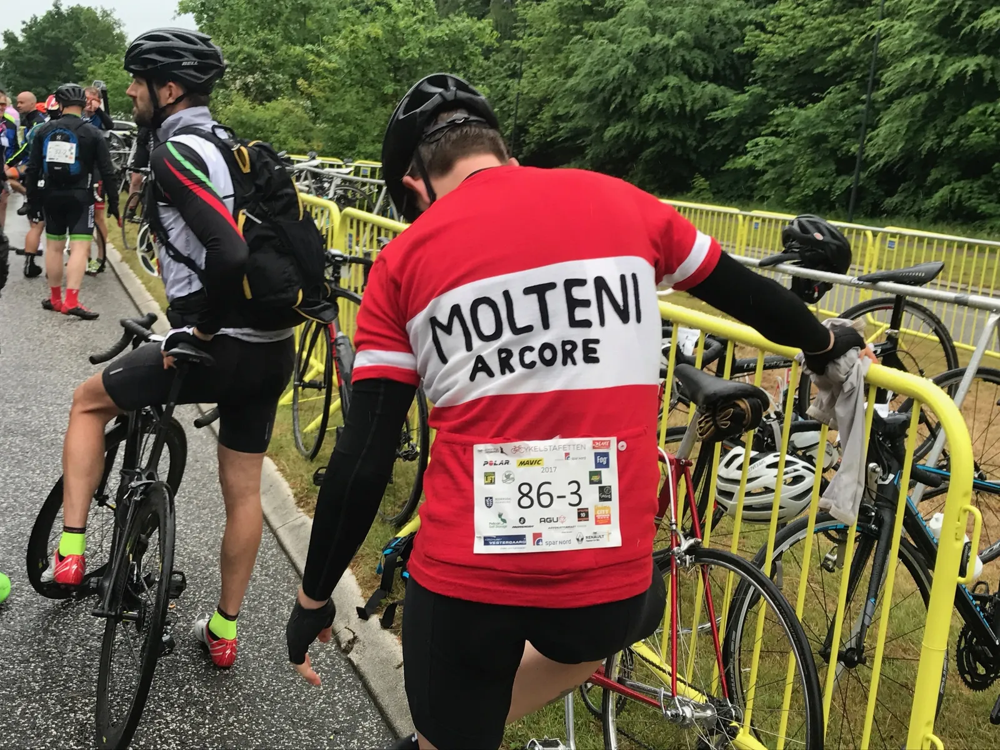
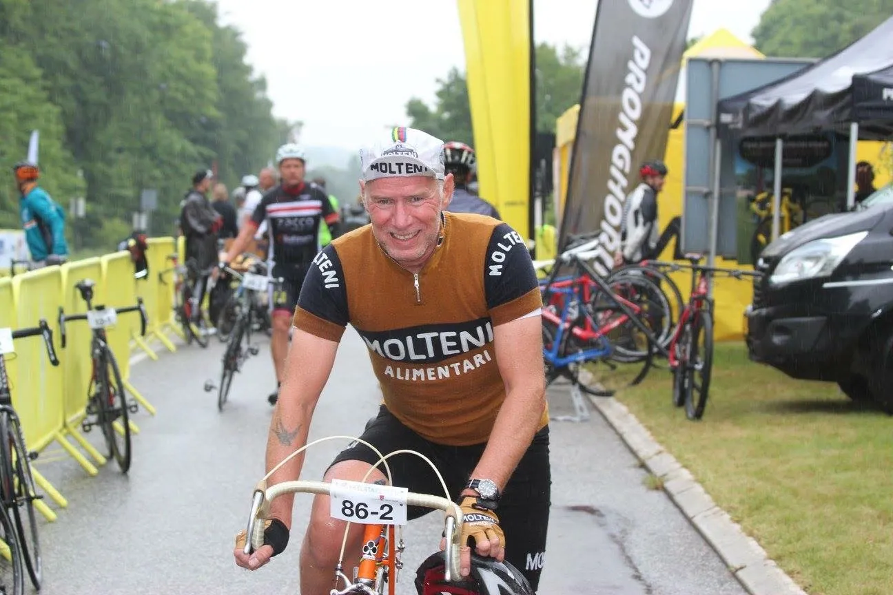

Moltenis Danmarksmestertrøje satte legender på plads

Squadra Molteni stod til start ved den sjællandske afdeling af Cykelstafetten – Spar Nord, som blev afviklet på den 14 kilometer lange VM-rute ved Rudersdal hvor Mark Cavendish i 2011 tog regnbuetrøjen. Til Squadra Moltenis hold var udtaget Squadra Moltenis 2016 Danmarksmester på stål, Mark Perdersen samt Jacob Ingemann Hansen og Jens Langergaard.
Molteni-Mark og profferne
Udover at gå efter den samlede sejr var målet for Squadra Molteni en sejr i den uofficielle stålklasse. Sir Thomas Marker havde arrangeret at ikke færre end 14 Velopress hold stod til start, herunder Brooklyn, Del Tongo, Gios, et Bananihold, et titaniumhold og en række andre hold på stål.
Et regnvejr startede cirka en time inden start til stor tilfredshed for Squadra Molteni. Det ville gøre løbet hårdt og taktikken var netop at gøre løbet hårdt for konkurrenterne. Mark blev sendt afsted som 1. mand og på de over hundrede carbonhold der også stillede til start så man som 1. kører to tidligere indehavere af den gule trøje i Tour de France, Jens Voigt og Bo Hamburger, tidligere verdensmester i Mountainbike og Cyclo-cross, Henrik Djernis. Til start stod også legenden Jørgen Emil Hansen, der naturligvis stod til start på sin Saxil af stål og VM-trøjen i uld fra 1966 hvor han blev verdensmester i kongedisciplinen 100 km holdkørsel.
Efter tyve minutter kom de første ryttere til syne for foden af Geels Bakke og i front lå Mark Petersen i retro/DM-trøjen sammen med Team Christianias Yeh’ns Diche. Op af bakken laver de begge et hul på 20-25 meter til eksprofferne og verdensmester-striberne. Mark signalerer ikke engang han tager endnu en omgang. Løbet skulle gøres hårdt for konkurrenterne.

Ibuprofen, gule piller og punktering
Som 2. mand kørte Jens Langergaard. Han var inden start blevet velmedicineret med ibuprofen og gule piller så smerterne fra diskusprolapsen blev holdt i skak. Men alder og 14 dages pause gjorde at omgangstiden blev omkring tre minutter længere end Marks. Derefter tog Jacob fat og kørte Squadra Molteni frem og kørte fra spids op af Geels Bakke og Mark tog igen over. Der skulle køres 4 timer og Mark tog på sin tredietur igen en dobbelt omgang i DM-trøjen med Molteni håndbroderet på brystet. Jacob Ingemann havde desværre en punktering på sin 3. tur som kostede fem minutter (Per Sandahl har dog vurderet, at den punktering har kostet mindst 9 minutter), men Squadra Molteni nåede alligevel at sende Jacob ud på sidste og holdets 11. omgang inden måtten blev lukket kl 14.00.

2. plads blandt stålholdene
Dermed blev det til en samlet 24. plads blandt de 116 hold og en 2. plads blandt stålholdene fra Velopress, kun overgået med knap af Titanium-holdet med de ca fem minutter Jacobs punktering kostede. Fra Squadra Molteni deltog også holdets uundværlige forkvinde Maria Winther som kørte forbilledligt men ikke desværre nåede den omgang der kunne have bragt holdet tæt på podiet da en punktering for køreren før hende betød at måtten lukkede. Også Max Nielsen fra Squadra Molteni var på ruten, dog i Mavics servicevogn, med sit altid gode humør.
Tak til Ole Egeblad for et fantastisk set-up i Cykelstafetten Spar Nord – og tak til Sir Thomas Marker og Velopress.